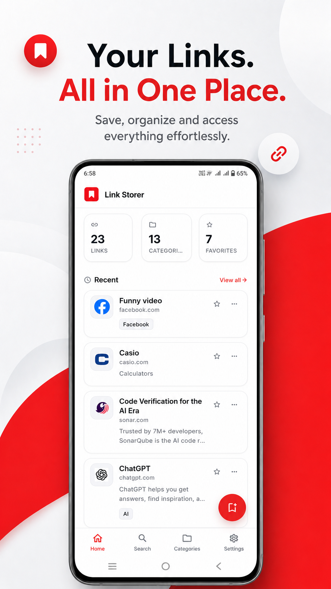

Link Storer
Save links. Organize them. Never lose them.
Link Storer is a clean, offline-first link manager for Android. Save a link from anywhere, let it fetch the title and site automatically, then organize, tag, star, and find everything with an instant search.
Offline-first. No sign-up needed. Your data stays on your device.

Features
Everything you need to manage links
A focused set of tools that make saving and finding links effortless, without the clutter.
Save any link
Add a link in seconds with a URL and title. Everything is stored locally on your device, so it works offline.
Auto metadata
When you paste a URL, Link Storer fetches the page title, site name, and favicon automatically so links are ready to go.
Categories
Create, rename, and delete categories, then group your links into a clean grid with live link counts.
Tags
Add multiple pill-shaped tags to any link for finer organization than categories alone.
Smart search
Instant search across titles, descriptions, URLs, categories, and tags, so a link is always a few keystrokes away.
Favorites
Star any link to pin it to a dedicated favorites view for quick access to what matters most.
Link health
Check your links and see which are active or broken, with status indicators shown right on each card.
Share to Link Storer
Share a URL straight into Link Storer from any app, like YouTube or your browser, and it opens the save flow.
Export & import
Download a full copy of your links as JSON, CSV, or TXT, and restore from a previously exported file.
Dark mode
A premium layered dark theme that adapts to your device, with a light, dark, or system default choice.
Google Drive backup
Back up your links to a private app folder in your own Google Drive, and restore them on a new device.
Private by default
No account, no tracking, no sign-up. Your links live in a local database on your own device.
How it works
Three simple steps
Manage your links the way that feels natural, in a few moments.
Save a link
Share a URL from any app or add one manually. Link Storer grabs the title and site for you.
Organize it
Add a description, drop it into a category, tag it, and star it as a favorite whenever you like.
Find it later
Search across everything instantly, or browse by favorite, category, and recent links.
App preview
A clean dashboard at a glance
Your stats, recent links, and favorites all on one clear home screen.
The Link Storer home screen.
Privacy & your data
Your links stay yours
Link Storer is designed to be private by default. There is no account for the core app, no tracking, and none of your links are shared with us.
Your links and categories are stored in a local database on your device. The internet is only used for fetching link metadata, checking link health, and sharing exports.
If you choose Google Drive backup, your links go to a private app folder in your own account. Read the full details in our Privacy Policy.
- Local storage. Links and categories live in a local database on your device.
- No account required. The core app works without signing in or creating an account.
- You stay in control. Export or delete all of your data at any time from the settings.
- Optional backups. Google Drive backup is available when you want to keep a copy off-device.
Developer
Built by a developer who cares
Start organizing your links today
Get Link Storer and keep every link you care about saved, organized, and easy to find. Reach out to the developer to learn how to get the app on your device.
Get Link Storer